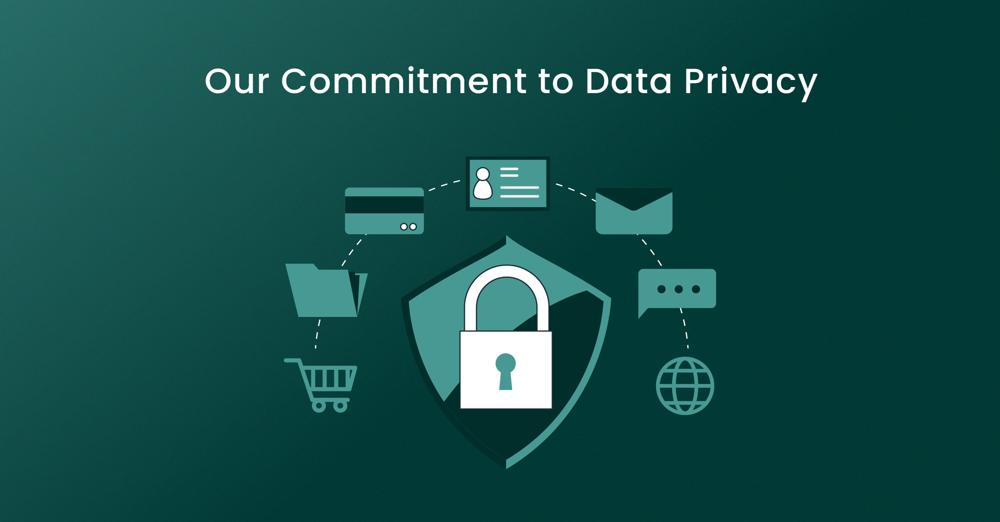

Lune's Commitment to Privacy-focused Financial Data Enrichment for Banks
In the age of digital banking, safeguarding customer data is crucial. Integrating third-party financial services can be a double-edged sword, offering benefits but also raising privacy and security concerns.
Published on

Keeping Customer Data Safe with Lune
In the age of digital banking, safeguarding customer data is crucial. Integrating third-party financial services can be a double-edged sword, offering benefits but also raising privacy and security concerns. At Lune, we understand these concerns and are dedicated to delivering privacy-focused financial data enrichment for banks without compromising on security.
Privacy and Security Concerns - What's at Stake?
Banks are now more dependent on digital services than ever. As they integrate with third-party financial services, it's essential to ensure these partnerships uphold the highest levels of security and privacy. After all, customer trust is on the line.
For instance, If third-parties were to experience a data breach, the bank's customers might find themselves dealing with identity theft, fraud, or other security violations
Banks must carefully evaluate and work with providers that prioritize customer data protection.
Lune's Approach to Privacy and Security
At Lune, we go above and beyond to ensure customer data remains secure and private:
- Bank-grade security: We use cutting-edge encryption technologies, like hashing key management, to keep sensitive financial data safe.
- A fortress-like infrastructure: Our robust infrastructure is continuously monitored and updated to tackle emerging threats head-on.
- Consent matters: We believe in transparency and only share personal financial data when customers give their explicit consent.
- A secure connection you can trust: Our account connection process is designed to be user-friendly, transparent and secure, giving you peace of mind.
- Security-driven innovation: We constantly improve our products, policies, and practices to ensure they're built with security as a top priority.
- Harnessing the Power of the Cloud: We use state-of-the-art cloud technologies to host Lune's API. This allows us to use strong protection for your data and maintain high-security standards while adapting to emerging threats and challenges effectively.
Getting Started Today
Experience the benefits of Lune's privacy-focused financial data enrichment for your bank. Simply contact us, integrate our user-friendly API, and unlock secure and seamless data enrichment services.